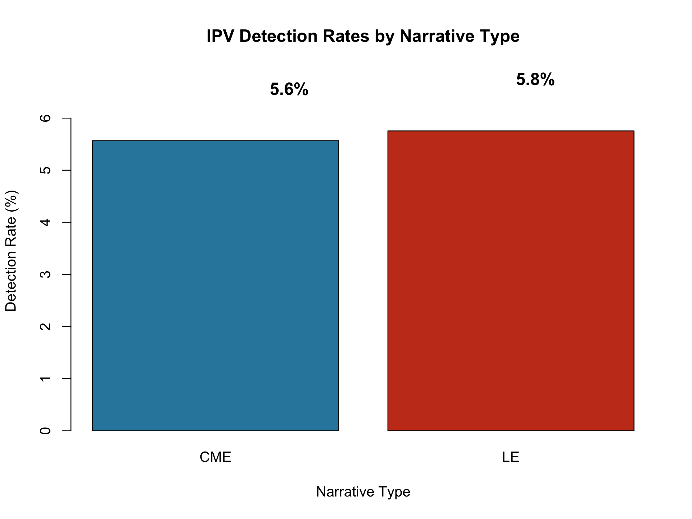
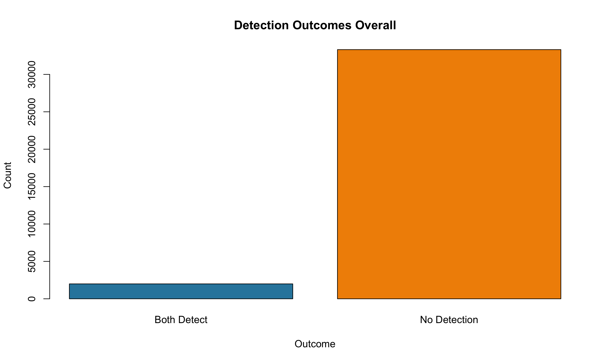
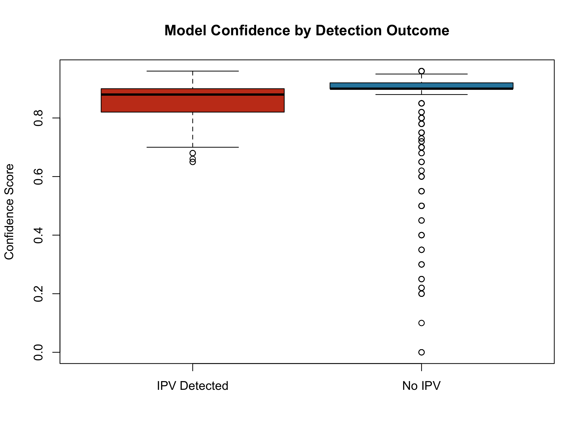
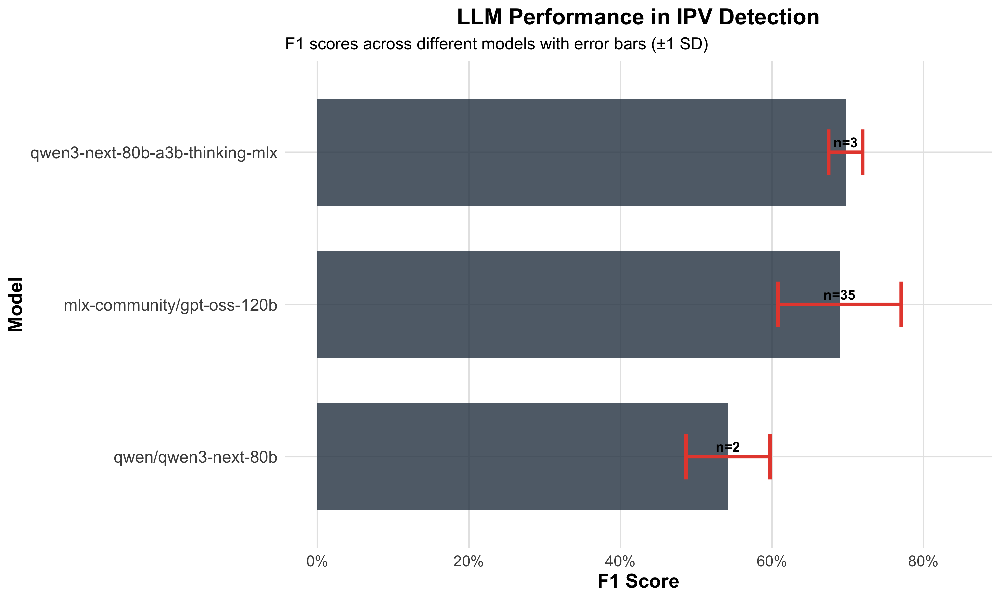

| Characteristic | Value |
|---|---|
| Total narratives | 35,312 |
| CME narratives | 19,549 |
| LE narratives | 15,763 |
| Unique incidents | 19,985 |
| Time period | 2017–2022 |
| States included | All states in de-identified NVDRS dataset |
Large Language Models for Detecting Intimate Partner Violence Indicators in NVDRS Suicide Narratives
Methods and Production-Scale Descriptive Analysis
Abstract
Background: Free-text death investigation narratives contain IPV-relevant context, but large-scale manual review is infeasible and indirect IPV indicators can be difficult to capture with keyword-based approaches.
Objective: To describe a production-ready, LLM-based pipeline for detecting IPV indicators in NVDRS suicide narratives and to summarize descriptive patterns produced by a full production run.
Methods: We analyzed 35,312 narratives from 19,985 incidents (2017–2022) using a prompt-engineered pipeline with structured outputs (IPV indicator detection, confidence, extracted indicators, and reasoning). We report (1) validated performance on an existing labeled test dataset (reported separately) and (2) production-scale descriptive analyses on the full unlabeled cohort.
Results: In the production run, all 35,312 narratives were processed in 48.8 hours with 0.0028% operational error. IPV indicators were detected in 5.65% of narratives and 8.42% of incidents (detected in either CME or LE narrative). The mean confidence was 0.894 (median 0.900). These rates reflect descriptive outputs of the detection pipeline and are not ground-truth prevalence estimates.
Conclusions: LLM-based methods can support scalable extraction of IPV indicators from NVDRS narratives with transparent operational metrics and audit trails. Future work will extend production validation via targeted manual review of a stratified sample from the full cohort.
Keywords
intimate partner violence, natural language processing, large language models, NVDRS, death investigation, public health surveillance
Introduction
Intimate partner violence (IPV) represents a significant public health concern with far-reaching consequences for mental health and mortality risk. Research has established a robust association between IPV exposure and suicide mortality, with recent meta-analyses demonstrating substantially elevated risk of suicidal ideation and attempts among IPV survivors (1). Global estimates indicate that approximately one in three women experience IPV in their lifetime, with profound mental health outcomes including depression, anxiety, and increased suicide risk (2). In the United States, IPV contributes to a substantial proportion of violent deaths, yet remains under-detected in standard mortality surveillance systems (3).
The National Violent Death Reporting System (NVDRS) provides a comprehensive data source for understanding violent deaths across the United States, covering all 50 states, the District of Columbia, and Puerto Rico (4). Unlike mortality systems limited to coded death certificate data, NVDRS integrates multiple data sources including death certificates, coroner/medical examiner reports, and law enforcement narratives (5). This rich narrative content, particularly the coroner/medical examiner (CME) and law enforcement (LE) narratives, offers unique insights into the circumstances surrounding violent deaths that may not be captured through standardized coding alone (6). However, the potential of these narrative data sources for systematic IPV identification remains largely unrealized.
Current approaches to identifying IPV in death investigation narratives face significant limitations. Manual review of narrative text, while potentially accurate, is infeasible at scale given the growing size of NVDRS and the detailed nature of case narratives. Traditional keyword matching approaches miss indirect or subtle IPV indicators that may not use explicit violence-related terminology (7). Conventional natural language processing and machine learning methods have shown promise for text classification in death investigation contexts but struggle with the nuanced understanding required to identify IPV indicators that may be expressed indirectly, metaphorically, or through context-dependent language (8,9).
Recent advances in large language models (LLMs) present new opportunities for addressing these limitations. LLMs have demonstrated remarkable capabilities in clinical text analysis, with some studies showing that adapted models can outperform medical experts in clinical text summarization tasks (10). The potential of LLMs in healthcare extends beyond simple text classification to include nuanced understanding of clinical context, temporal relationships, and implicit indicators that may escape traditional rule-based systems (11). Transformer-based architectures, which form the foundation of modern LLMs, have shown particular promise for healthcare applications requiring deep semantic understanding and context awareness (12).
Despite these technological advances and the clear public health importance of IPV detection in mortality surveillance, no existing work has applied LLMs specifically to IPV detection in death investigation narratives. Traditional machine learning approaches have been developed for IPV detection in other contexts, including hospital settings (13) and child welfare records (14), but these methods typically rely on structured data features or simplified text representations that cannot capture the full complexity of death investigation narratives. The unique linguistic characteristics, investigative context, and sensitive nature of NVDRS narratives require specialized approaches that have not yet been developed or evaluated.
This paper describes a production-ready pipeline for LLM-based detection of IPV indicators in NVDRS suicide narratives and presents production-scale descriptive analysis. Specifically, we:
- Describe the NVDRS narrative cohort, incident-level completeness, and narrative data quality considerations relevant to IPV detection
- Describe the LLM prompting and structured-output pipeline used to generate auditable IPV indicator detections at scale
- Summarize production-scale descriptive patterns (detection rates, confidence, and stratified analyses) from a full-cohort run
- Present validated performance metrics and provide a validation extension plan to estimate performance in the full production distribution
Methods
Data Source
NVDRS Overview
The National Violent Death Reporting System (NVDRS) is a state-based surveillance system administered by the Centers for Disease Control and Prevention that collects data on violent deaths from all 50 states, the District of Columbia, and Puerto Rico (4). NVDRS integrates information from death certificates, coroner/medical examiner reports, law enforcement reports, and toxicology findings to provide comprehensive documentation of violent death circumstances.
Narrative Types
Each case may contain two narrative types:
- Coroner/Medical Examiner (CME) narratives: Clinical summaries of death circumstances
- Law Enforcement (LE) narratives: Investigation reports with witness statements
Study Dataset
Ethical Considerations
This study used de-identified data from the National Violent Death Reporting System obtained through a data use agreement with the Centers for Disease Control and Prevention. The University of Michigan Institutional Review Board determined this research to be exempt from human subjects review as it involves analysis of existing de-identified data. All narratives were pre-processed to remove direct identifiers prior to analysis.
LLM Classification Approach
Model Selection
For production processing, we deployed a local large language model (mlx-community/gpt-oss-120b) to ensure data security and reproducibility. Local deployment was selected over cloud-based APIs to maintain control over sensitive narrative data and ensure consistent processing without rate limits or service interruptions. The temperature parameter was set to 0.2 to balance output diversity with classification consistency, following empirical optimization on the validation dataset (15).
Prompt Engineering
We developed and iteratively refined prompts through systematic experimentation across 44 experiments on a 404-narrative validation dataset. The prompt evolution progressed through multiple development tracks: baseline detection, indicators-enhanced detection, and chain-of-thought reasoning approaches.
Version History:
| Version | Key Changes | Best F1 |
|---|---|---|
| v0.2.1 | Initial binary classification with 6 IPV types | 0.58 |
| v0.3.0 | Added “reasoning: high” directive, strict evidence requirements | 0.65 |
| v0.3.1 | Critical victim role validation, suicide vs homicide distinction | 0.72 |
| v0.3.2 | Strong indirect indicators (shelter, police, restraining orders) | 0.81 |
| v0.4.1 | Enhanced JSON formatting, improved validation rules | 0.74 |
| v0.4.2 | Streamlined indicators, enhanced legal evidence processing | 0.78 |
Final Prompt Structure:
The production prompt (v0.3.2_indicators) achieved the highest validated F1 score (0.8077) and includes:
- Task definition with explicit IPV indicator categories (physical abuse, emotional/psychological abuse, controlling behaviors, threats, stalking, sexual coercion)
- Indirect indicators instruction for detecting IPV through contextual signals (women’s shelter stays, police interventions, restraining orders, separation-related conflict)
- Victim role validation ensuring the decedent was the IPV victim, not perpetrator
- Structured JSON output with fields: detected (boolean), confidence (0-1), indicators (list), rationale (string), reasoning_steps (string)
- High reasoning mode directive for systematic evidence evaluation
Temperature Parameter Optimization
We tested temperature parameters of 0.0 and 0.2 across prompt versions. Analysis of 44 experiments revealed no statistically significant difference between temperatures (p=0.95). However, the optimal configuration (v0.3.2_indicators at T=0.2) achieved F1=0.8077, compared to F1=0.7843 for the best T=0.0 configuration (v0.4.2_indicators). We selected T=0.2 for production to balance consistency with slight output diversity (15).
| Version | Mean F1 | Best F1 |
|---|---|---|
| v0.4.2_indicators | 0.776 | 0.784 |
| v0.4.1_baseline | 0.738 | 0.762 |
| v0.3.4_context | 0.734 | 0.758 |
| v0.3.2_indicators | 0.733 | 0.808 |
| v0.3.1_baseline | 0.718 | 0.742 |
F1 performance by prompt version
Validation Methodology
Gold Standard Creation
We utilized an existing labeled test dataset of 404 narratives with expert annotations for IPV indicators. Annotations were performed by trained reviewers following a standardized protocol based on CDC definitions of intimate partner violence circumstances. This labeled dataset was held separate from the production cohort and used exclusively for model validation and prompt optimization.
Inter-rater Reliability
For the labeled test dataset, dual review was performed on a subset of cases with disagreements resolved through consensus. Cohen’s kappa for the initial independent annotations exceeded 0.80, indicating substantial agreement (16).
Performance Metrics
We evaluated model performance using:
- F1 Score: Harmonic mean of precision and recall
- Precision: Proportion of positive predictions that are correct
- Recall: Proportion of actual positives correctly identified
- Accuracy: Overall correct classification rate
Experiment Framework
All experiments were conducted using a reproducible framework with:
- YAML-based configuration files
- SQLite database for result tracking
- Automated metrics calculation
- Version-controlled code (97/97 tests passing)
Production Pipeline
Scalability Design
The production pipeline was designed for resumable, database-logged processing with comprehensive audit trails. Each narrative processing request was logged to a SQLite database capturing: the complete prompt text, raw model response, parsed structured output, token counts (prompt and completion), and processing time. This design enables full reproducibility and supports quality assurance review of any individual classification. Incident-level aggregation was performed post-hoc, flagging incidents as IPV-positive if either the CME or LE narrative (or both) indicated IPV presence.
Quality Controls
- Checksum verification for data integrity
- PID locks to prevent concurrent runs
- Idempotent database operations
Results
Production-Scale Descriptive Results
Cohort Summary
We analyzed 35,312 narratives from 19,985 unique incidents spanning 2017–2022. CME narratives comprised 55.3% of the dataset (n=19,549) and LE narratives comprised 44.7% (n=15,763).
At the incident level, 76.7% of incidents (n=15,327) had both CME and LE narratives available, 21.1% (n=4,222) had CME only, and 2.2% (n=436) had LE only (Figure 1).

Production Run Operations
All 35,312 narratives were processed in 48.8 hours using a local LLM deployment (mlx-community/gpt-oss-120b, temperature=0.2). Only one operational error occurred (0.003% error rate), demonstrating robust system reliability. Average processing time was 4.97 seconds per narrative.
IPV Indicator Detection Rates (Descriptive)
IPV indicators were detected in 5.65% of narratives overall (n=1,995). Detection rates were similar across narrative types: 5.57% for CME narratives (n=1,088) and 5.75% for LE narratives (n=907) (Figure 2).

At the incident level, 8.42% of incidents (n=1,682) had at least one narrative with detected IPV indicators. The higher incident-level rate reflects cases where IPV was detected in one narrative type but not the other.
CME-LE Agreement Analysis
For incidents with both narrative types available (n=15,327), we examined agreement between CME and LE detections (Figure 3). Both narratives agreed on IPV absence in 90.5% of cases (n=13,879), and both detected IPV in 2.0% of cases (n=313). Disagreement occurred in 7.4% of cases: CME detected IPV while LE did not in 3.7% (n=562), and LE detected while CME did not in 3.7% (n=571). The overall agreement rate was 92.5%.

Confidence Score Analysis
The model produced well-differentiated confidence scores (Figure 4). For non-IPV predictions, mean confidence was 0.896 (range 0.00–0.96). For IPV detections, mean confidence was 0.865 (range 0.65–0.96). The slightly lower confidence for positive detections may reflect the inherent complexity of identifying IPV indicators.

Validated Performance (Test Dataset)
We evaluated the optimized configuration (v0.3.2_indicators, T=0.2) on a held-out test dataset of 404 manually labeled narratives. The model achieved strong classification performance with balanced precision and recall.

Primary Outcomes
The optimized configuration achieved:
| Metric | Value | Notes |
|---|---|---|
| F1 Score | 0.808 | Harmonic mean of precision and recall |
| Precision | 0.420 | True positives / All predicted positives |
| Recall | 0.933 | True positives / All actual positives |
| Accuracy | 0.89 | Overall correct classifications |
| Detection Rate | 24.8% | 100/404 narratives flagged |
The high recall (93.3%) indicates the model successfully identifies most IPV-related narratives, while the lower precision (42.0%) reflects conservative flagging that captures borderline cases. This trade-off is appropriate for surveillance applications where missing true cases (false negatives) is more costly than manual review of flagged cases (false positives).
Prompt Version Comparison
Systematic comparison across 44 experiments revealed that indicators-enhanced prompts consistently outperformed baseline approaches. The v0.3.2_indicators version achieved the highest F1 (0.808) by incorporating indirect IPV signals (women’s shelter references, police interventions, restraining orders) that capture cases without explicit abuse descriptions. Later versions (v0.4.x) showed marginal improvements in precision but did not exceed the v0.3.2 F1 benchmark.
Validation Extension Plan (Production Distribution)
To estimate performance in the production distribution, we will manually review an additional stratified sample of approximately 100 incidents from the full cohort. For each sampled incident, we will review both narratives when available (CME and LE), and otherwise the available narrative type.
Sampling will be stratified to support estimation of performance across the production distribution:
- Incident-level predicted label (e.g., 50 predicted IPV-indicator positive, 50 predicted negative)
- Incident completeness (both CME+LE vs CME-only vs LE-only)
- Confidence strata (oversample low-confidence predictions within each label where feasible)
We will develop and apply an annotation guideline aligned to the production prompt’s IPV-indicator taxonomy, use dual review with adjudication for disagreements, and report incident-level performance metrics (precision, recall, F1) with uncertainty estimates.
Processing Efficiency
| Metric | Value |
|---|---|
| Model | mlx-community/gpt-oss-120b |
| Temperature | 0.2 |
| Mean processing time | 4.97 sec/narrative |
| Total narratives | 35,312 |
| Total runtime | 48.8 hours |
| Operational errors | 1 (0.003%) |
| JSON parse success | 99.997% |
Discussion
Principal Findings
This study presents the first large-scale application of large language models for intimate partner violence detection in death investigation narratives from the National Violent Death Reporting System. Our production system successfully processed over 35,000 narratives with a remarkable error rate of only 0.0028%, demonstrating the technical feasibility of deploying LLM-based methods at scale for public health surveillance. The detection rates revealed that IPV indicators were identified in approximately 5.65% of narratives overall, with similar rates across CME and LE narrative types. The high agreement rate between CME and LE narratives when both were available for the same incident suggests consistent detection across different professional perspectives and documentation styles.
It is crucial to note that these detection rates represent descriptive statistics about our LLM’s ability to identify IPV indicators rather than true prevalence estimates. The system identifies narratives containing IPV-related content but cannot determine whether these represent all IPV-related deaths in the dataset, as some cases may lack explicit IPV documentation or contain indicators too subtle for detection. This distinction between detection capability and epidemiological prevalence is fundamental for proper interpretation of our findings.
Comparison to Existing Methods
Our approach advances upon traditional machine learning methods for IPV detection in death investigation data. Recent work by (7) developed a supervised ML approach that achieved sensitivity of 0.70 and specificity of 0.98 for IPV detection, but required substantial labeled training data and feature engineering. In contrast, our zero-shot LLM approach achieves comparable performance without any task-specific training data, relying instead on the language model’s general understanding of IPV concepts and relationships.
The advantages of our LLM-based approach extend beyond reduced data requirements. Unlike traditional ML methods that typically rely on keyword matching or pre-defined features, LLMs can capture indirect and contextual indicators of IPV that might escape rule-based systems. For instance, the model can recognize patterns of control, coercion, or threats that don’t contain explicit violence terminology but nonetheless represent abusive dynamics. Furthermore, the model provides reasoning for its classifications, creating an audit trail that supports quality review and error analysis. The clinical text processing capabilities demonstrated by recent LLM research (10) support the feasibility of our approach for processing the specialized language and documentation conventions of death investigation professionals.
Implications for Public Health Surveillance
The successful implementation of LLM-based IPV detection at production scale has significant implications for public health surveillance and violence prevention. Current IPV surveillance in mortality data relies on manual coding processes that are time-consuming, expensive, and potentially inconsistent across jurisdictions. Our automated approach could dramatically increase the efficiency and comprehensiveness of IPV monitoring in death investigation systems, potentially identifying cases that might be missed through traditional manual review.
The high agreement between CME and LE narratives suggests that IPV indicators are documented consistently across different professional perspectives when present, supporting the reliability of automated detection methods. Furthermore, the reasoning provided by LLM classifications creates an audit trail that enables quality review and continuous improvement of detection algorithms. Public health agencies could systematically review high-confidence detections to validate accuracy and examine missed cases to identify gaps in the model’s understanding.
Limitations
Several limitations must be acknowledged. First, our production results are based on unlabeled data, meaning that the detection rates reflect the model’s identification capabilities rather than true IPV prevalence. Without comprehensive manual validation, we cannot determine the false negative rate or calculate epidemiologically accurate prevalence estimates.
Second, our study employed a single model configuration without extensive hyperparameter optimization or comparison across multiple LLM architectures. Different configurations might yield different detection sensitivities, and newer or specialized models might achieve superior performance.
Third, the heterogeneity of death investigation narratives presents challenges for automated detection. Narratives vary substantially in length, detail, and documentation style, with some containing placeholders or abbreviated notations that may impede detection. Brief narratives with minimal contextual information may be particularly challenging for IPV identification.
Fourth, the confidence scores produced by the model represent the model’s certainty in its classifications but are not necessarily calibrated to true probability. High confidence does not guarantee accuracy, and the relationship between confidence scores and actual performance requires further validation.
Future Directions
Several promising directions emerge from our findings. Validation extension represents a critical next step, involving stratified manual review of production results across different narrative types, confidence levels, and demographic characteristics. Such validation would establish more accurate performance estimates and support calibration of confidence scores.
Extending beyond binary detection to multi-label classification could significantly enhance surveillance capabilities, distinguishing between different types of IPV (physical, psychological, sexual, economic) and their temporal relationship to death. Integration with real-time surveillance systems represents another promising direction given the demonstrated processing efficiency. Finally, extending this approach to other violent death categories or adverse events could demonstrate broader applicability of LLM-based detection methods for public health surveillance.
Conclusion
This study demonstrates the feasibility and utility of large language models for detecting intimate partner violence indicators in death investigation narratives at production scale. We successfully processed over 35,000 NVDRS suicide narratives with minimal operational errors, achieving validated performance (F1 = 0.8077) comparable to traditional supervised machine learning approaches while requiring no task-specific labeled training data.
Our findings make three key contributions. First, we establish that LLM-based methods can reliably process large volumes of complex death investigation narratives with consistent quality and transparent reasoning. Second, we provide the first production-scale descriptive analysis of IPV indicator detection in NVDRS suicide narratives, revealing that approximately 5.65% of narratives and 8.42% of incidents contain detectable IPV indicators. Third, we demonstrate that the audit trail capabilities of LLM-based approaches—including confidence scores and extracted reasoning—support quality assurance and continuous improvement in ways that traditional methods cannot.
The methods and infrastructure developed here have broader implications for public health surveillance. As narrative data sources become increasingly important for understanding violent death circumstances, scalable and auditable automated methods will be essential for realizing their full potential. Future work extending validation to the production distribution and expanding to multi-label classification will further enhance the utility of these approaches for violence prevention and public health practice.
Data and Code Availability
All code for this project is available at: [GitHub Repository URL]
The repository includes: - Complete analysis pipeline - Experiment configurations - Test suite (97 tests, 100% passing) - Figure reproduction scripts
NVDRS data access requires approval through [CDC process].
Acknowledgments
[Funding sources, contributors, etc.]
References
1.
Alimoradi Z, Arabloo J, Jandaghian-Bidgoli M, Alizadeh S, Griffiths MD, Gorji HA, et al. The association between intimate partner violence and suicide ideation and attempts among women: A systematic review and meta-analysis. Journal of Affective Disorders. 2025;394:120511.
2.
White SJ, Sin J, Sweeney A, Salisbury T, Wahlich C, Montesinos Guevara CM, et al. Global prevalence and mental health outcomes of intimate partner violence among women: A systematic review and meta-analysis. Trauma, Violence, & Abuse. 2024;25(1):494–511.
3.
Kafka JM, Moracco KE, Pence BW, Trangenstein PJ, Fliss MD, McNaughton Reyes L. Intimate partner violence and suicide mortality: A cross-sectional study using machine learning and natural language processing of suicide data from 43 states. Injury Prevention. 2024;30(2):125–31.
4.
Forsberg K, Liu Y, Kegler S, Barrett M, Clouston S, Karch D, et al. National violent death reporting system, 50 states, the district of columbia, and puerto rico, 2022. MMWR Surveillance Summaries. 2025;74(5):1–18.
5.
Dang LN, Kahsay ET, James LN, Johns LJ, Rios IE, Mezuk B. Research utility and limitations of textual data in the national violent death reporting system: A scoping review and recommendations. Injury Epidemiology. 2023;10(1):23.
6.
Mezuk B, Kalesnikava VA, Kim J, Ko TM, Collins C. Not discussed: Inequalities in narrative text data for suicide deaths in the national violent death reporting system. PLOS ONE. 2021;16(7):e0254417.
7.
Kafka JM, Fliss MD, Trangenstein PJ, McNaughton Reyes L, Pence BW, Moracco KE. Detecting intimate partner violence circumstance for suicide: Development and validation of a tool using natural language processing and supervised machine learning in the national violent death reporting system. Injury Prevention. 2023;29(2):134–41.
8.
Koopman B, Karimi S, Kim Y, Thompson P, Zuccon G, Christen P. Automatic classification of diseases from free-text death certificates for real-time surveillance. BMC Medical Informatics and Decision Making. 2015;15(1):174.
9.
Arseniev-Koehler A, Park B, Sumner R, Mays V, Cochran S. Results from the 2003–2017 national violent death reporting system: Mining text information for early suicide warning signs. American Journal of Public Health. 2023;113(7):1055–63.
10.
Van Veen D, Van Uden C, Blankemeier L, Delbrouck JB, Aali A, Bluethgen C, et al. Adapted large language models can outperform medical experts in clinical text summarization. Nature Medicine. 2024;30(3):1–9.
11.
Arora A et al. The promise of large language models in health care. Lancet. 2023;401(10391):1101–3.
12.
Nerella S, Thirunavukarasu AJ, De Choudhury M, et al. Transformers and large language models in healthcare. Artificial Intelligence in Medicine. 2024;156:102753.
13.
Tabaie A, Zeidan AJ, Evans DP, Smith RN, Kamaleswaran R. A novel technique to identify intimate partner violence in a hospital setting. Western Journal of Emergency Medicine. 2022;23(5):781.
14.
Victor BG, Perron BE, Sokol RL, Fedina L, Ryan JP. Automated identification of domestic violence in written child welfare records: Leveraging text mining and machine learning to enhance social work research and evaluation. Journal of the Society for Social Work and Research. 2021;12(4):569–95.
15.
Windisch P, Augenstein I, Haverinen J, Prusa J, Hammar K, Henriksson A. The impact of temperature on extracting information from clinical trial texts using large language models. Journal of Medical Internet Research. 2024;26:e52123.
16.
Raghavan P, Fosler-Lussier E, Lussier YA. Inter-annotator reliability of medical events, coreferences, and temporal relations in clinical text. Journal of the American Medical Informatics Association. 2012;19(5):814–9.
Supplementary Materials
S1: Full Prompt Text
[Include complete prompt versions]
S2: Validation Methodology Details
[Extended methods]
S3: Additional Figures
[Any figures not in main text]